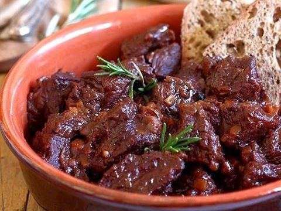

Peposo

It's the perfect proof that you only need three ingredients to be happy
Ok, maybe its four ingredients, but who really counts salt anyway? Ths italien meat dish will make you very happy if you're into that sort of thing.
Note: Several traditional recipes call for horse meat. If you don't happen to have a horse-butcher near you (I'm from northern Germany, where you still get them sometimes) just use beef. If you're not sure what part of the animal to use, go for a cheaper cut, they're often the best for this kind of application
Ingredients
- 1 kg of good stew horse-meat or beef
- 1 liter of dry red wine
- a handfull of black peppercorns
- salt
Steps
- Cut the meat into roughly 3 cm chunks and brown it in a large pot. You don't have to brown all of it, half is fine.
- Get the red wine in there! Scrub the bottom of the pan with a wooden spoon to get all that good stuff into the dish.
- Add the crushed peppercorns.
- Let it simmer for about four hours.
- Season with salt.